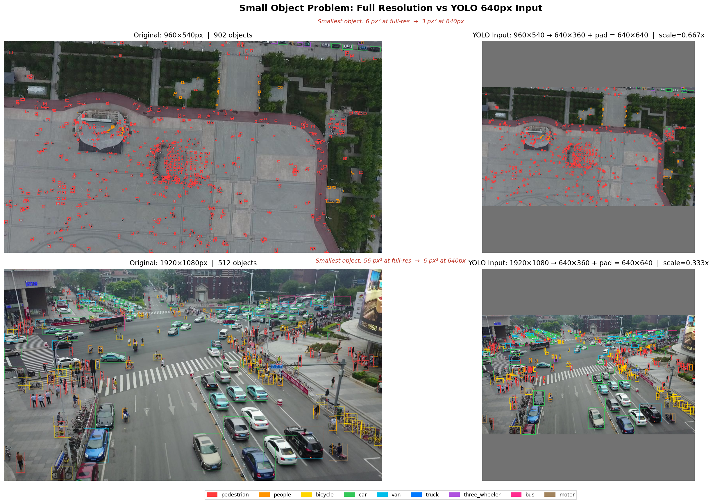
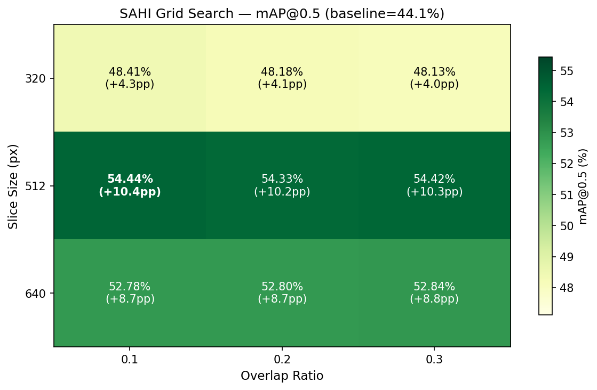
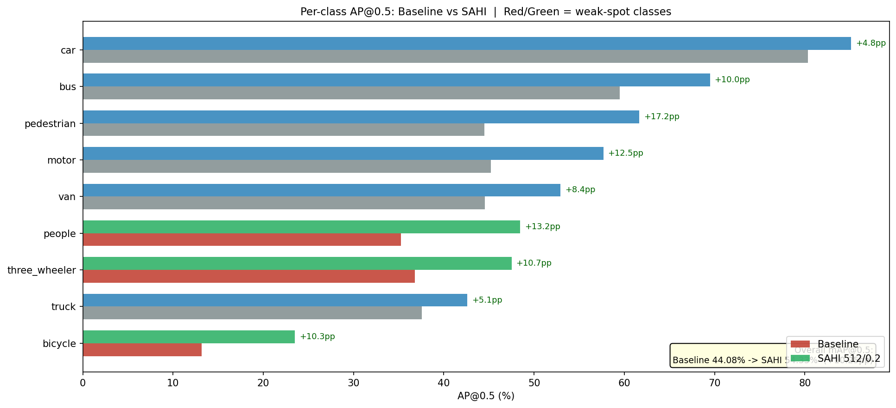
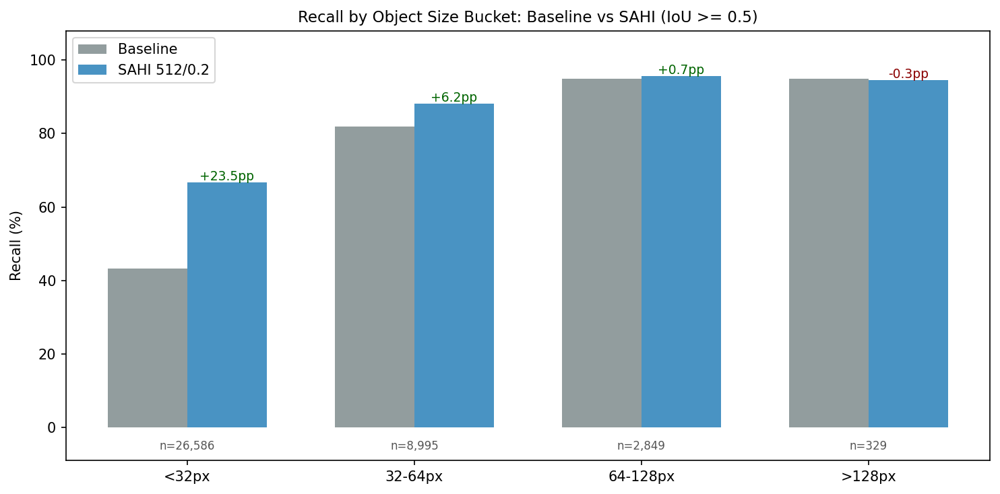

Aerial vehicle detection for Sri Lankan urban traffic — YOLOv8 + SAHI on VisDrone2019-DET with INT8 quantization for edge deployment.
Standard YOLO resizes every input image to 640×640 pixels before inference. VisDrone drone frames range from 960×540 to 2000×1500. After resize, a pedestrian that was 18 px wide becomes a 6 px blob — below the network's effective feature-extraction threshold.

Instead of resizing the whole image, SAHI slices it into overlapping 512×512 tiles and runs YOLO on each tile at full resolution. Detections from all tiles are merged using Non-Maximum Suppression. Small objects are never downscaled — they are always seen at their original pixel size.
| Variant | mAP@0.5 | mAP@0.5:0.95 | Latency | Device | Model Size |
|---|---|---|---|---|---|
| YOLOv8s Baseline | 44.08% | 26.09% | 112.7 ms | GPU | 21.5 MB |
| YOLOv8s + SAHI 512/0.1 | 54.44% | 32.98% | 206.1 ms | GPU | 21.5 MB |
| YOLOv8s INT8 (no SAHI) | 51.58% | 33.42% | 94.7 ms | CPU | 11.0 MB |
| YOLOv8s + SAHI + INT8 | 54.07% | 32.76% | 858.4 ms | CPU | 11.0 MB |
INT8 dynamic quantization achieves a 3.9× model size reduction (21.5 MB → 11.0 MB) while preserving 99.3% of SAHI mAP.
9 configurations tested: slice size {320, 512, 640} × overlap ratio {0.1, 0.2, 0.3}.
Best configuration: slice 512, overlap 0.1 — highest mAP@0.5 (54.44%) at the lowest latency among 512-tile configs (206.1 ms/img).

AP@0.5 on VisDrone2019-DET val (548 images). Baseline → SAHI best config (512/0.1).
| Class | Baseline | SAHI | Delta |
|---|---|---|---|
| pedestrian | 44.5% | 62.0% | +17.5pp |
| people | 35.2% | 48.7% | +13.4pp |
| bicycle | 13.2% | 23.3% | +10.1pp |
| car | 80.3% | 85.1% | +4.8pp |
| van | 44.5% | 53.2% | +8.7pp |
| truck | 37.5% | 42.5% | +4.9pp |
| three_wheeler | 36.8% | 47.8% | +11.0pp |
| bus | 59.5% | 69.7% | +10.3pp |
| motor | 45.2% | 57.6% | +12.4pp |
Every class improves. The largest gains are on the smallest object classes (pedestrian, people, motor).

Recall by ground-truth bounding box size bucket:
| Size Bucket | Ground Truths | Baseline Recall | SAHI Recall | Delta |
|---|---|---|---|---|
| < 32 px | 26,586 | 43.3% | 66.7% | +23.5pp |
| 32–64 px | 8,995 | 81.9% | 88.1% | +6.2pp |
| 64–128 px | 2,849 | 95.0% | 95.7% | +0.7pp |
| > 128 px | 329 | 94.8% | 94.5% | −0.3pp |
SAHI's gains are concentrated exactly where standard YOLO fails — objects under 32 pixels, which make up 68% of all ground truths.

VisDrone's "tricycle" class maps directly to Sri Lankan three-wheelers (tuk-tuks). This is not data manipulation — it is intelligent localization of a global benchmark to a local deployment context.
Three-wheelers are the dominant mode of urban transport in Sri Lanka. Detecting them reliably from aerial footage is a prerequisite for any drone-based traffic monitoring system deployed locally.
Local API server:
pip install -r requirements.txt
uvicorn app.main:app --port 8000Endpoints:
GET /health — model statusGET /classes — list of 9 detection classesPOST /predict — upload an image, get detectionsDocker:
docker build -t aerovision-lk .
docker run -p 8000:8000 aerovision-lkGradio demo:
python app/gradio_demo.py
# Opens at http://127.0.0.1:7860Side-by-side comparison of SAHI vs standard YOLO inference with bounding box visualization.
The model still struggles in specific areas: